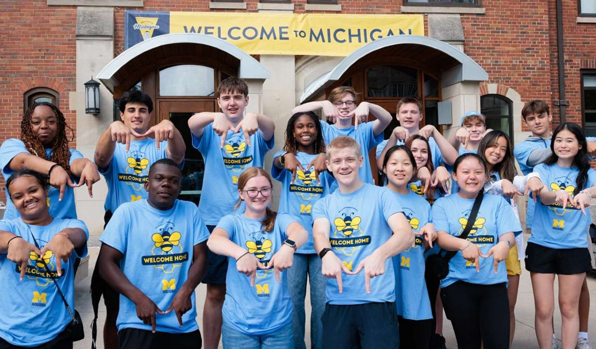

Where do I begin?
Good news! You're here, which means you've taken the first step to finding a solution to your problems. This page will provide you with the ability to get in contact with UMSI advisors, as well as information on degree requirements, degree progress, and course registration.
Degree Requirements
Degree requirements can vary depending on year of enrollment; for precise information regarding your degree requirements, please select the link associated with your cohort. Make sure you're signed in to your student account, or you will not have access to the documents below:
Fall 2024
Fall 2023
Don't see your year or degree listed? Reach out to an advisor!
Degree Progress
Wondering about your degree progress? Generate a Degree Audit Report in Wolverine Access by following these easy steps:
- Go to Wolverine Access
- Click "Student Business" in the "Students" tab
- Select "Student Center"
- Under "Academics" select "Academic Requirements"
- Click the double arrow
- Select "View Report as PDF"
Still have questions? Reach out to an advisor!
Course Waivers
Course Waivers are given to students in order to allow them to take more advanced courses without taking the pre-requisite. Note that while waivers allow you to "skip" a course, you do not gain any credits for waiving a course. If you wish to begin the waiver process, or simply learn more about waivers, visit the UMSI course waivers website.
Talk with an Advisor
Need additional help? There are a number of ways to connect with an academic advisor depending on your needs!